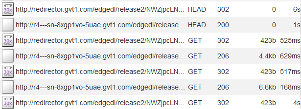
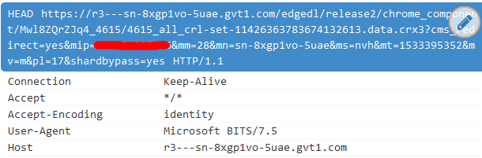
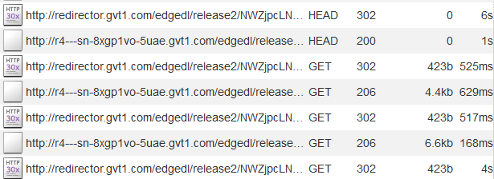
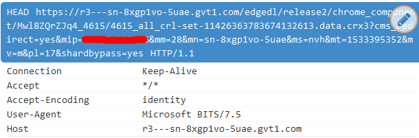
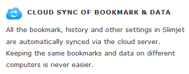

Slimjet
Slimjet jest klonem przeglądarki internetowej SlimBrowser od FlashPeak która wykorzystuje kod źródłowy Chromium.
Poziom Oprogramowania Szpiegowskiego: Ekstermalnie Wysoki
Na swojej stronie internetowej Slimjet twierdzi że jest bardzo zaangażowana w dbanie o prywatność użytkownika i blokuje śledzenie Google, w przeciwieństwie do Google Chrome[1]. Jednak, to twierdzenie jest nieprawdziwe. Slimjet stale wysyła informacje do Google i łączy się z ich usługami. Slimjet twierdzi że obawia się o prywatność ale ostatecznie zachowuje prawie wszystkie funkcje szpiegowskie znalezione w Google Chrome, jak również dodatkowe śledzenie dodane przez FlashPoint. W ten sposób, Slimjet udaje się zaimplementować całe oprogramowanie szpiegowskie które można znaleźć w przeglądarkach takich jak Google Chrome, z wyjątkiem tego że zamiast do jednej firmy która posiada te informacje, jest ono podzielone na kilka firm...
Kontakt do domu
Mimo że na swojej stronie internetowej FlashPeak twierdzi że: "Slimjet nie wysyła żadnych danych do Google jak Chrome."[1] w momencie kiedy uruchamiam Slimjet przy uruchomionym MITMproxy, zostaje powitany tym:

Więc, to twierdzenie najzwyczajniej w świecie jest nieprawdziwe. Wciąż Slimjet posiada szpiegowskie rzeczy Google, skoro ciągle łączy się z różnymi usługami Google. Zaskakujące jest to że wciąż nie połączono mnie z żadnym serwerem FlashPeak gdy to testuję. Mimo to, FlashPeak twierdzi że zbiera informacje o swoich użytkownikach do wewnętrznego użytku.[2] Więc, musi to być kontakt do domu jak również wysyłanie informacji do Google. Może wysyła informacje przez jakąś usługę Google?
Domyślna wyszukiwarka internetowa w Slimjet to szpieg
Domyślną wyszukiwarką internetową jest Bing, która sprzedaje twoje informacje do reklamodawców. Jeśli to nie wystarcza, wyszukiwanie jest "serwowane przez fpseek.com" co oznacza że nie tylko ujawniasz swoje informacje dla Bing, ale one są również przechwytywane przez fpseek, który ma własną politykę prywatności[3]. Za każdym razem gdy szukasz coś przez domyślną wyszukiwarkę, twoje żądania są wysyłane jednocześnie do Bing i fpseek.

Więc, nie tylko udostępniasz wszystkie dane Microsoftowi, teraz jeszcze inna firma przegląda twoje wyszukiwania. To jest wyjątkowo zła domyślna wyszukiwarka internetowa z powodu ilości wycieku informacji. Fpseek samo w sobie jest firmą która wydaje się szpiegować w jaki sposób użytkownicy wchodzą w interakcję z reklamami, i twierdzi że zbiera dane o użytkownikach do:
"...utrzymania i ulepszania jakości i działanie oprogramowania i usług, w tym, monitorowania wyświetlania i interakcji z reklamami, wynikami wyszukiwania oraz innymi usługami i produktami dostarczanych przez firmę." [3]
Więc, wygląda na to że twoje wyszukiwania są wysyłane do dwóch firm reklamowych zamiast do jednej. Przynajmniej wtedy gdy wyszukiwarka internetowa zostanie zmieniona na alternatywną, taką jak DuckDuckGo, żądania do fpseek ustają.
Zbieranie informacji o użytkownikach
Slimjet twierdzi że zbiera "pewne anonimowe informacje dotyczące statystyk używania funkcji", oraz twierdzi że nie przechwytuje twojego adresu IP bądź sprzedaje te informacje do reklamodawców. Jednak, to ciągle jest szpiegowskie oprogramowanie typu opt-out.
Korzystanie z usługi BITS Microsoftu do wysyłania historii wyszukiwania na serwery Google
Gdy uruchamiasz Slimjet, zacznie on używać BITS (Background Intelligent Transfer Service) które zostało zaprojektowane do używania wolnej przepustowności aby przesyłać aktualizacje i inne informacje. Te żądania są przesyłane między Slimjet a serwerem Google, z potwierdzeniem z Process Monitor i MITMproxy:
 



Prywatne informacje zostały ocenzurowane z tych zdjęć. Nie jest jasne do czego to służy, ale prawdopodobnie jest to robione w celu zaimplementowania "SYNCHRONIZACJI ZAKŁADEK I DANYCH" która jest reklamowana na stronie Slimjet. Prawdopodobnie w ten sposób przesyłają całą twoją historię wyszukiwania i zakładki do swojej chmury, która wygląda na dostarczoną przez Google. Nie ma innych opcji ani żądań które wymagają dużych ilości danych do przesłania na inny serwer tą drogą, więc przez proces eliminacji to jest moja teoria, jak to zostało zaimplementowane.
Oczywiście można powiedzieć że każdy rodzaj usługi synchronizującej historię wyszukiwania "w chmurze" to koszmar prywatności. Teraz zarówno Google jak i Slimjet mają dostęp do twojej historii przeglądania...